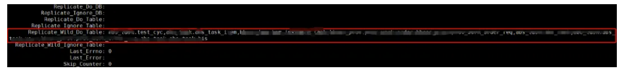
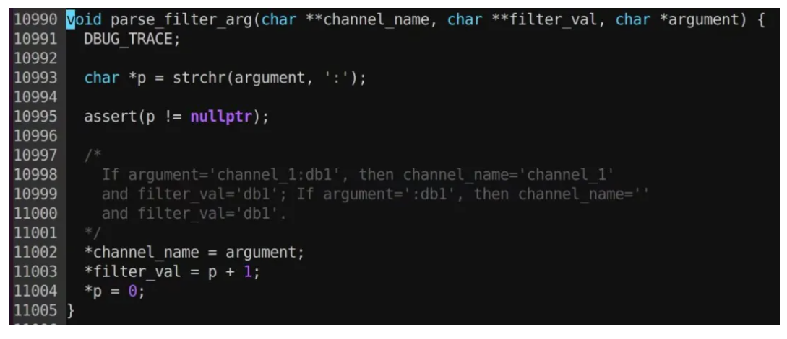

包拯断案 | 数据库从库GTID在变化 为何没有数据写入@还故障一个真相
提问：作为DBA运维的你是否遇到过这些烦恼
1、数据库从库复制链路如何正确配置表过滤信息？
2、数据库从库的GTID在变化，实际却没有数据写入，究竟是什么原因？
心中有章，遇事不慌
作为DBA的你，遇到问题无从下手，除了在问题面前徘徊，还能如何选择？如果你一次或多次遇到该问题还是
无法解决，又很懊恼，该如何排忧呢？关注公众号，关注《包拯断案》专栏，让小编为你排忧解难~
#包拯秘籍#
一整套故障排错及应对策略送给你，让你像包拯一样断案如神：
#首先
遇到此类问题后，我们要做到心中有章（章程），遇事不慌。一定要冷静，仔细了解故障现象
（与研发/用户仔细沟通其反馈的问题，了解故障现象、操作流程、数据库架构等信息）
#其次
我们要根据故障现象进行初步分析。心中要想：是什么原因导致数据库从库里没有数据写入？
例如：是复制链路的状态出现问题了，还是配置的表过滤信息出错了？
#然后
针对上述思考，我们需要逐步验证并排除，确定问题排查方向。
#接着
确定了问题方向，进行具体分析。通过现象得出部分结论，通过部分结论继续排查并论证。
#最后
针对问题有了具体分析后，再进行线下复现，最终梳理故障报告。
真刀实战，我们能赢
说了这么多理论，想必实战更让你心动。那我们就拿一个真实案例进行分析——某运营商业务系统部署了
一套多源复制的数据库架构，DBA发现：从库主机异常重启、启动复制后，GTID在变化但是并没有数据写入，
究竟是什么原因？
01故障发生场景
在项目现场兢兢业业进行数据库部署的你，突然收到告警：一套部署多源复制的数据库架构中，
数据库从库所在主机发生异常重启后，手动拉起复制链路，一段时间后客户反馈从库数据没变化，
数据最近更新的时间是主机重启前。经查看，发现复制链路状态正常且配置的表过滤信息都显示正常，
从库GTID在变化，但就是没有数据写入从库，DBA心中疑惑不已，立马着手排查。
02故障排查分析
1）收到告警后，DBA登录数据库后台检查主从复制状态，发现复制状态正常
=
2）检查从库每个复制通道中配置的表过滤信息，配置也显示正常

3）检查从库errorlog，发现日志里没有显示异常信息
4）检查从库relaylog，发现relaylog中的事务不是空事务
5）检查从库binlog，解析后发现从库binlog日志中所有事务都是空事务，只包含了begin和commit操作。
由此怀疑，是应用relaylog时配置的表过滤没有生效导致的。由于无法在本地复现该问题，DBA无法确定具体
原因，因此求助研发团队。经研发团队查看代码并调试后发现，问题出在配置文件中的replicate-wild-do-table
参数设置上，此前DBA将表过滤配置持久化到配置文件上了，因该参数获取的表名存在问题，导致数据未能正
确应用到从库中。为解决这个问题，DBA在对replicate-wild-do-table参数进行正确设置后，数据同步恢复正常。
03问题复现
通过研发同事代码调试，发现配置文件中持久化的参数有问题。例如参数设置为
【replicate-wild-do-table=tongdao2:test2.t1,test2.t2】。
GreatDB启动时，每一行作为一个条件，此时对于tongdao2而言，配置replicate-wild-do-table的
结果是：db=test2，table_name=t1,test2.t2，这样写会将 t1,test2.t2 当作一个表，不满足条件。
因此，同步过程中，table_name=t1，test2.t2 找不到，导致所有事务全部转化为空事务，
也就查询不到数据了。
源代码如下：

解析参数时，只查找了冒号为channel和table的分隔符，没在table之间去检查逗号的逻辑。
04故障解决方案
（1）将replicate-wild-do-table持久化到配置文件时：
采用多源复制时，为避免上述问题，可采用如下配置：同一通道下每张表单独配置一行，
例如：test2.t1，test2.t2 表；
例如：
replicate-wild-do-table=tongdao1:test1.t1
replicate-wild-do-table=tongdao2:test2.t1
replicate-wild-do-table=tongdao2:test2.t2
（2）不将replicate-wild-do-table持久化到配置文件时：
如果不将此参数持久化到配置文件，应在实例重启后重新执行 CHANGE REPLICATION FILTER命令
配置表过滤条件，确保配置及时生效，例如：
greatdb> CHANGE REPLICATION FILTER
Replicate_Wild_Do_Table=('test2.t1','test2.t2') for channel 'tongdao2';复盘总结
1.故障主要原因
此次故障导致的主要原因是 replicate-wild-do-table 参数未正确配置，导致表过滤条件不生效，
将应用的所有事务转化为空事务。
2.重视故障测试
在一套新的业务系统后完成数据库架构搭建后，应进行故障测试，包括模拟数据库从库异常重启、
复制链路重建等情况，以验证配置的稳定性和可靠性，提前规避相关故障发生。